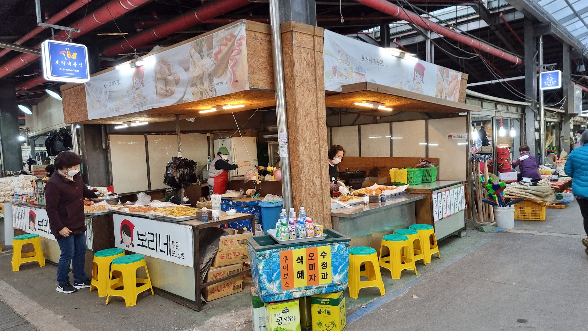

Jeju Traditional Five-Day Market: A Lively Shopping Stop in Jeju City
At a glance: Jeju Traditional Five-Day Market is a large, open-air market in Jeju City, best suited to visitors who enjoy browsing local goods, fresh produce, clothing, household items and market snacks. It follows a five-day market cycle, so check that your visit falls on a market day before you go.
Address: 26 Oiljangseo-gil, Cheju, Jeju-do
Google rating: 4.2/5 from 6,985 reviews (Google listing information checked for this guide)
What to expect
Jeju Traditional Five-Day Market is a different kind of shopping experience from a mall or a row of souvenir shops. It is a broad, busy market where everyday shopping and local food culture share the same space. Stalls and shops offer a changing mix of goods, which can include produce, seafood, clothing, household wares and ready-to-eat snacks. The exact selection will depend on the day and the vendors present.
Part of the appeal is simply taking your time and looking around. You may spot ingredients or products that are unfamiliar, watch shoppers choosing their groceries, or find small items to take home. Come with curiosity rather than a strict shopping list: the market is more rewarding as a browse than as a place to seek one guaranteed product.
This is also a working market, not a staged attraction. Aisles can be lively, and shoppers may be carrying bags or moving goods. Keep your belongings close, step aside when checking your phone, and ask before photographing vendors or their stalls. A polite smile and a simple gesture can help when language is a barrier.
Plan around the five-day market cycle
The market’s name refers to its periodic schedule, rather than daily opening. Jeju’s traditional five-day market is generally held on calendar dates ending in 2 or 7, such as the 2nd, 7th, 12th, 17th, 22nd and 27th. Confirm the schedule before setting out, especially if your trip is short or falls near a public holiday. Market activity and individual stall availability can vary.
If you are hoping to see the market at its liveliest, plan your visit for a market date and allow time to wander. If your itinerary does not line up with one, avoid assuming that the full market experience will be available. Check the map listing or ask your accommodation for current local guidance before making a special trip.
How to make the most of your visit
Give yourself room to explore rather than trying to cover every aisle quickly. If you see something you want to buy, check the item and quantity before paying; where a product is unfamiliar, asking the seller to confirm what it is can prevent surprises. For food, point to the item or use a translation app if you need to ask about ingredients. Do not assume a dish is suitable for a particular allergy or dietary requirement unless the vendor can confirm it.
Bring a reusable shopping bag if you expect to buy several items. It is also sensible to carry some cash as a backup, while checking payment options with each seller; payment methods may differ between vendors. Wear comfortable shoes, and be prepared for outdoor conditions. If you are buying perishable food, consider how you will store it and whether it makes sense to carry it for the rest of the day.
The market can be a useful place to see a more everyday side of Jeju City, but it is still a place where people come to shop. Be considerate of customers and stallholders, keep pathways clear, and avoid touching goods unless invited to do so.
Getting there and finding your way
The listed address is 26 Oiljangseo-gil, Cheju, Jeju-do. Use the Google Maps link below to navigate and check the location before departure. Because the market operates on a cycle, confirm both the date and the route for your specific visit rather than relying on a general itinerary. This guide does not list public transport details or opening hours, as these should be checked against current local information.
Good to know
- Check the date first: The five-day schedule is central to the visit. Dates ending in 2 or 7 are commonly associated with market days, but verify locally before travelling.
- Allow time to browse: The market is spread across multiple stalls and is more enjoyable without a rushed schedule.
- Bring a bag and payment backup: A reusable bag is handy, and carrying some cash may help where payment options vary.
- Ask before taking photos: Be respectful of vendors, customers and personal space.
- Check current details: Google lists the market at 4.2/5 from 6,985 reviews; ratings and visitor information can change.
Useful links
- Jeju Traditional Five-Day Market on Google Maps
- No official website is listed for this market.
FAQ
Is Jeju Traditional Five-Day Market open every day?
No. It is a periodic market, generally held on dates ending in 2 or 7. Confirm the current schedule before visiting.
What can I shop for there?
Depending on the vendors present, you may find produce, seafood, clothing, household goods and market snacks. Stock and selection can vary.
Is it suitable for visitors who do not speak Korean?
Yes, you can browse and shop, but English may not be available at every stall. A translation app and simple gestures can help with questions about products, ingredients and payment.